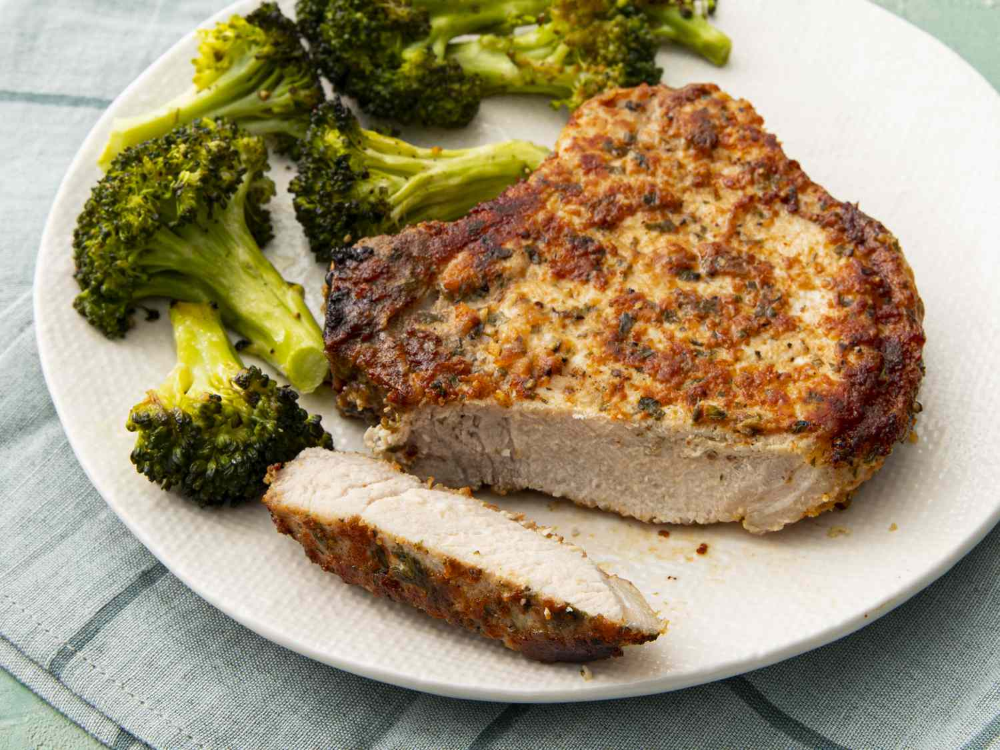

Easy Air Fryer Pork Chops

Easy Air Fryer Pork Chops Recipe
Boneless pork chops cooked to perfection in the air fryer.
This recipe is so easy and you couldn't ask for a more
tender and juicy chop.
Ingredients
- ½ cup grated Parmesan cheese
- 1 teaspoon paprika
- 1 teaspoon garlic powder
- 1 teaspoon kosher salt
- 1 teaspoon dried parsley
- ½ teaspoon ground black pepper
- 4 (5 ounce) boneless pork chops
- 2 tablespoons extra virgin olive oil